OculomotorJax — Clinical Benchmarks
A. Vestibular Lesions
Three standardised tests: spontaneous nystagmus, vHIT, and rotary chair/OKN.
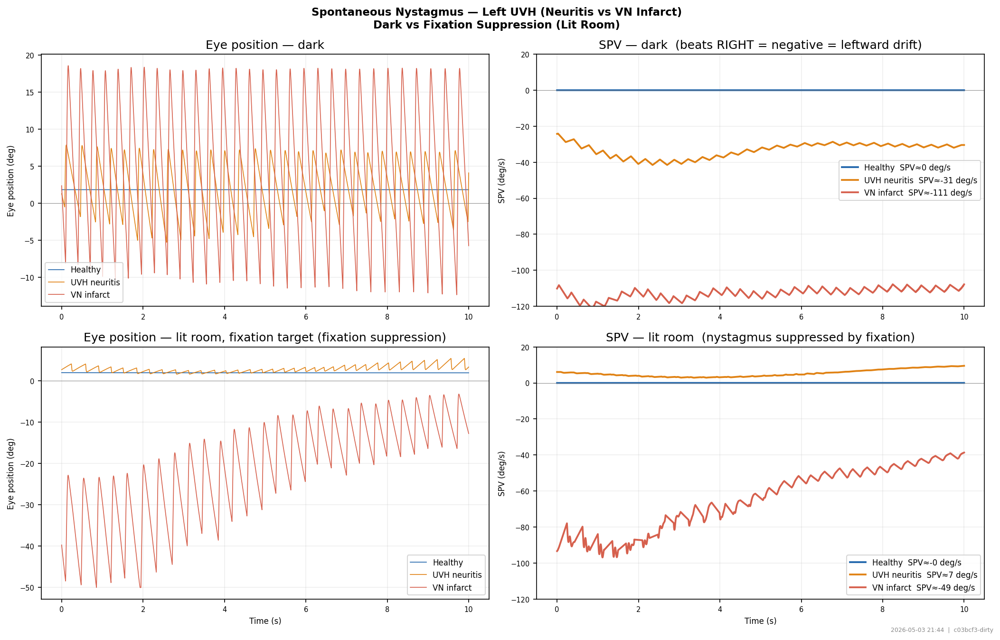
Spontaneous Nystagmus — Dark vs Fixation Suppression
Left UVH (10% canal gain, tau_vs=10 s) vs VN infarct (tau_vs=5 s). Dark: spontaneous nystagmus driven by VN firing-rate asymmetry. Lit room with fixation target: scene and target both on; OKR and saccadic correction suppress nystagmus.
📖 Halmagyi & Curthoys (1988); Bense et al. (2004)
behavior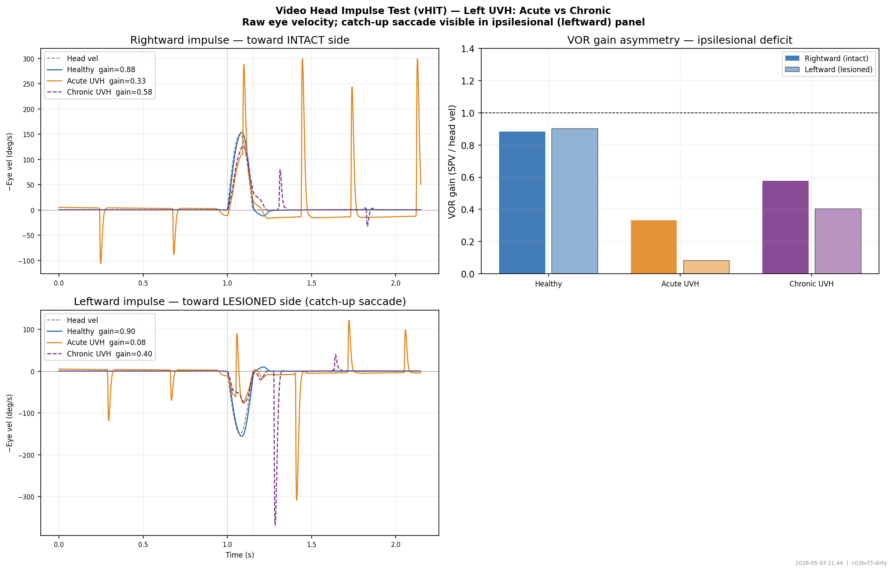
vHIT — Acute vs Chronic Left UVH (10% left canal gain)
150 deg/s half-sine impulse, left and right. Scene absent, fixation target only. Acute UVH: b_lesion=85 (mild tonic imbalance, spontaneous nystagmus visible). Chronic UVH: b_lesion=100 (central compensation restored VN balance). Gain = regression of early SPV (first 60 ms) onto head velocity.
📖 Halmagyi & Curthoys (1988); MacDougall et al. (2009)
cascade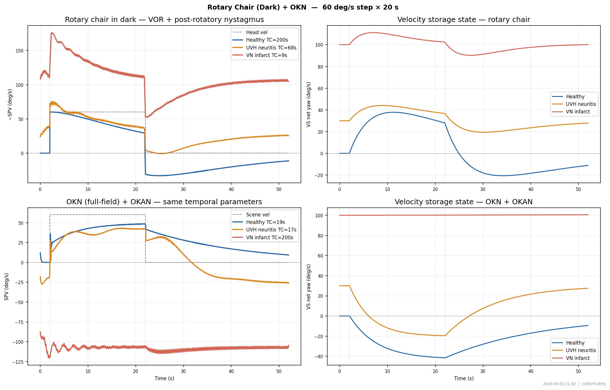
Rotary Chair (Dark) + OKN — SPV and VS State
Step rotation 60 deg/s × 20 s in dark, then post-rotatory nystagmus. Same temporal parameters for OKN/OKAN. Lesioned tau_vs (UVH=10 s, VN infarct=5 s) shortens post-rotatory TC. OKN/OKAN unaffected by peripheral vestibular lesion (VS driven by visual slip).
📖 Raphan et al. (1977); Cohen et al. (1977); Baloh et al. (1984)
behaviorB. Gaze-Holding & Integrator Disorders
Neural integrator and velocity-storage pathology: gaze-evoked nystagmus (leaky NI), rebound nystagmus (NI null adaptation), Bruns nystagmus, and extended OKAN (VS null adaptation / PAN precursor).
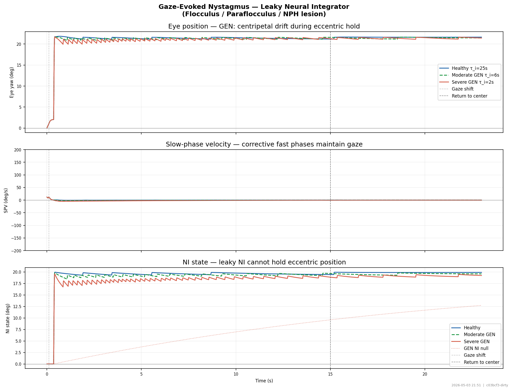
Gaze-Evoked Nystagmus (GEN)
NI leak TC reduced: healthy 25 s → moderate 6 s → severe 2 s. Centripetal drift during eccentric gaze; corrective fast phases.
📖 Cannon & Robinson (1985) Biol Cybern; Zee et al. (1976) J Neurophysiol
behavior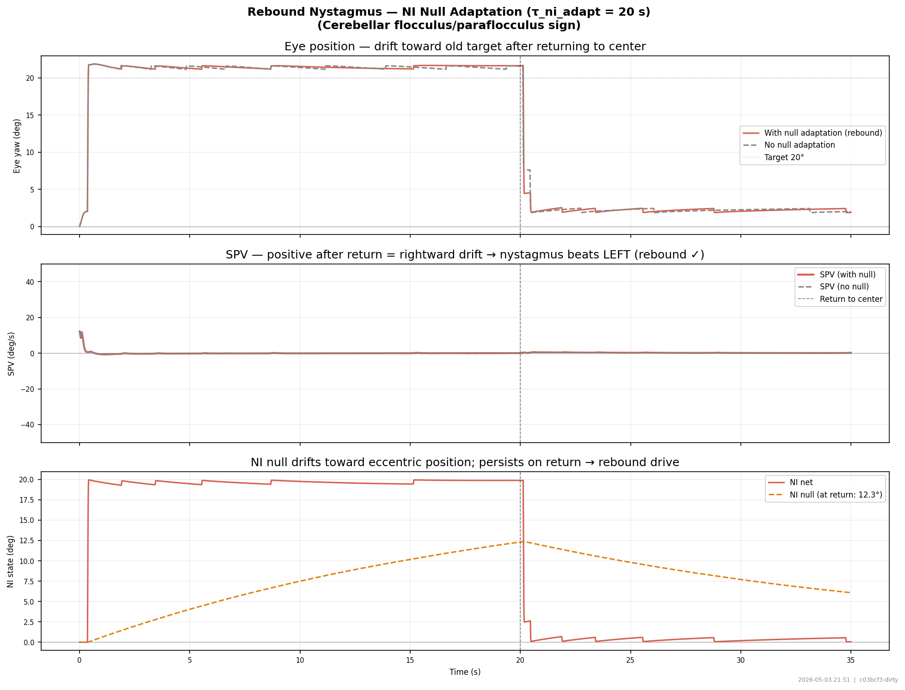
Rebound Nystagmus
NI null adaptation TC = 20 s. Hold 20° for 20 s, return to center. Null persists → rebound beats toward center.
📖 Zee et al. (1980) Brain; Hood & Leech (1974) J Neurol
behavior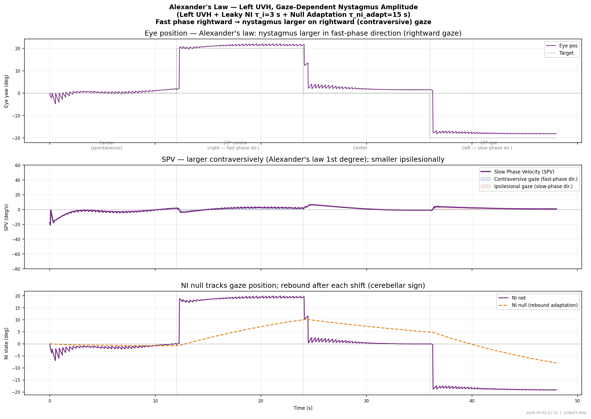
Alexander's Law (UVH + GEN)
Left UVH + leaky NI (τ_i=3 s) + NI null adaptation (τ=15 s). Demonstrates Alexander's law: nystagmus amplitude larger when gazing in the fast-phase direction (rightward = contraversive for left UVH). NI null adaptation adds a rebound component when returning to center.
📖 Alexander G (1912) Pflügers Arch; Leigh & Zee (2015) Neurology of Eye Movements, 5th ed.
behavior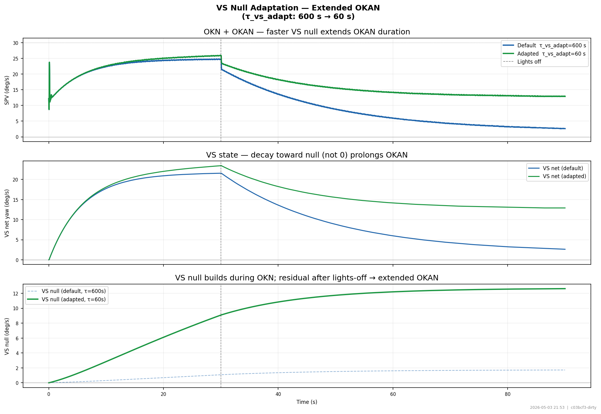
Extended OKAN / VS Null Adaptation
VS null adaptation (τ_vs_adapt 600→60 s) prolongs OKAN. PAN would require inhibitory null coupling (future work).
📖 Cohen et al. (1992) J Neurophysiol; Leigh et al. (1981) Neurology
behaviorC. Cranial Nerve Palsies, Motor Nuclear Lesions & INO
Simulated 9 positions of gaze and saccade trajectories under CN VI (abducens nerve / nucleus), CN III (oculomotor), CN IV (trochlear) palsies and internuclear ophthalmoplegia (INO). Graded recovery series for CN VI nerve palsy and partial INO.
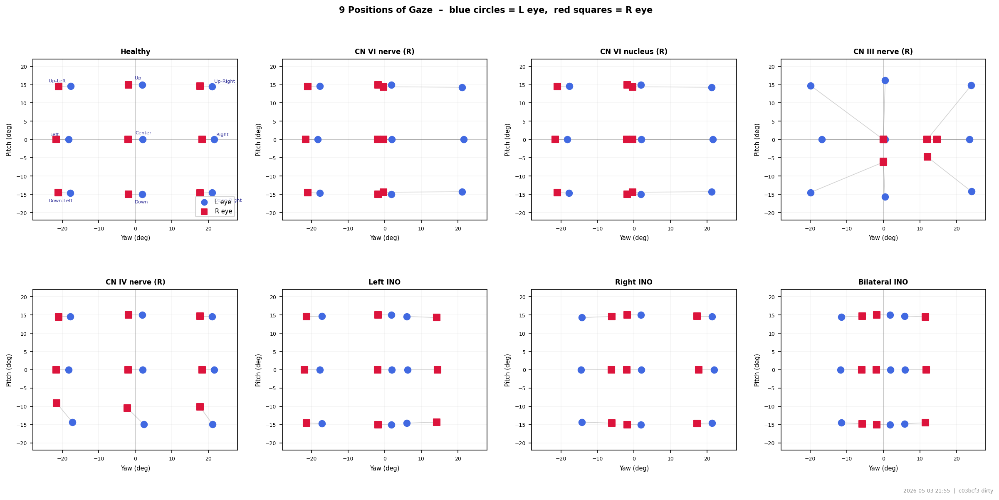
9 Positions of Gaze
Standard clinical 9-position gaze test. Each panel shows left (blue circles) and right (red squares) final eye positions after a saccade to each of the 9 standard fixation targets. Vertical or horizontal gaps between paired symbols reveal the duction deficit for each lesion.
📖 Leigh RJ & Zee DS (2015) The Neurology of Eye Movements, 5th ed.
behavior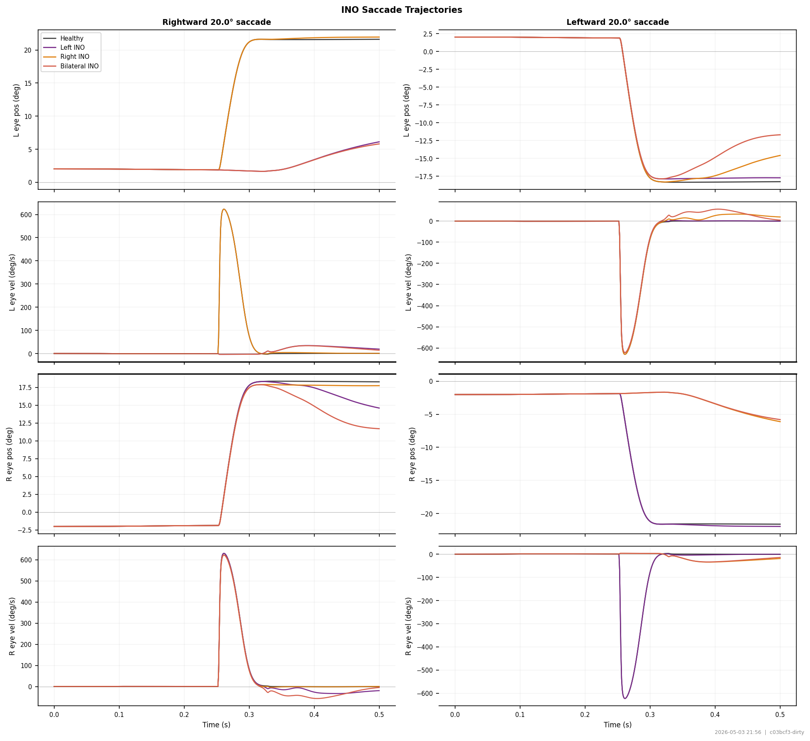
INO Saccade Trajectories
Horizontal saccade position and velocity for healthy, left INO, right INO, and bilateral INO. Left INO impairs left-eye adduction on rightward saccades; right INO impairs right-eye adduction on leftward saccades. Dashed = left eye; solid = right eye.
📖 Bhidayasiri R et al. (2000) Brain 123:1241-1267 — INO pathophysiology; Zee DS et al. (1992) Ann Neurol 32:756-764 — BIMLF syndrome.
cascade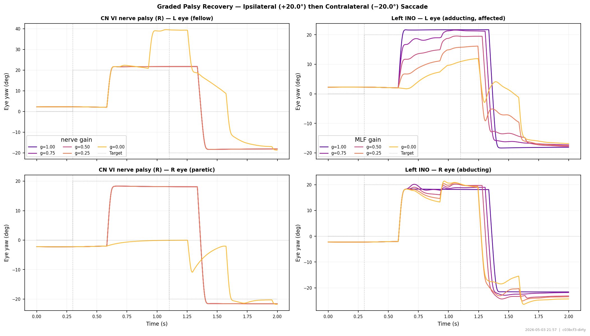
Graded CN VI and INO Recovery
Continuous ipsilateral (+20.0°) then contralateral (−20.0°) saccade. CN VI R nerve palsy (left): R (paretic) eye undershoots and slows. Left INO (right): L (adducting) eye lags and undershoots on rightward saccade. Both eyes on same axes; lit room, target present.
📖 Keller & Robinson (1972) J Neurophysiol 35:466; Frohman et al. (2003) J Neuro-ophthalmol 23:106.
behaviorD. Saccadic Disorders
Slow saccades from reduced burst-neuron drive (PPRF/IBN lesion), ocular flutter and square wave jerks from reduced OPN tone, and complete saccadic palsy (absence of fast phases during VOR).
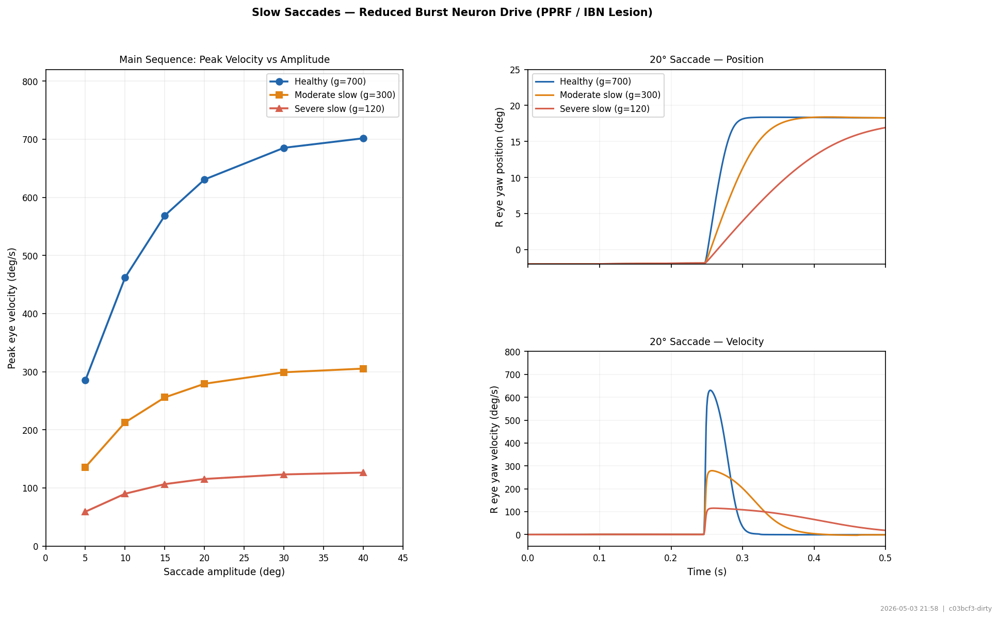
Slow Saccades (Main Sequence Shift)
Main sequence curves (left, full height) and 20° saccade position + velocity traces (right, stacked) for three levels of burst-neuron ceiling (g_burst). Reduced g_burst models PPRF / IBN lesion.
📖 Zee DS et al. (1976) Ann Neurol 1:309-315 — PPRF slow saccades.
behavior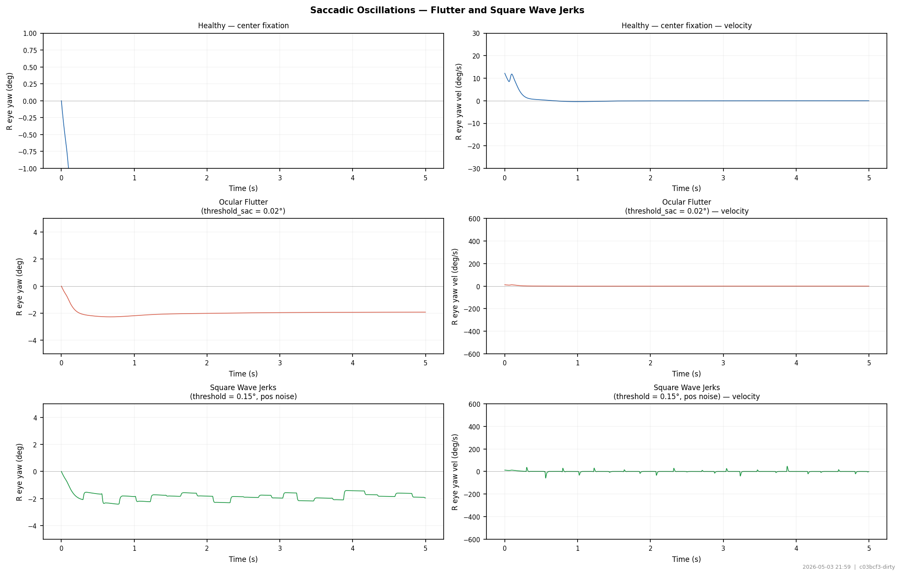
Ocular Flutter and Square Wave Jerks
Static center fixation under healthy, flutter, and SWJ conditions. Flutter: OPN threshold set near zero → saccade generator oscillates continuously. SWJ: moderately relaxed threshold + retinal position noise → pairs of back-to-back saccades with the inter-saccadic fixation interval. Left column = position, right = velocity.
📖 Zee DS & Robinson DA (1979) Ann Neurol 5:207-209 — flutter mechanism; Hepp K et al. (1989) Exp Brain Res 75:551-564 — OPN and saccadic control.
cascadeE. Vergence — Cover Test & Phoria
Clinical cover test: the left eye's target visibility is zeroed to simulate occlusion (target_present_L = 0). Binocular fusion is disrupted; vergence drifts toward the tonic resting vergence. The amplitude and direction of drift reveal phoria. Recovery on uncovering shows the fusional vergence response. Three conditions (exophoria, normal, esophoria) × two fixation distances.
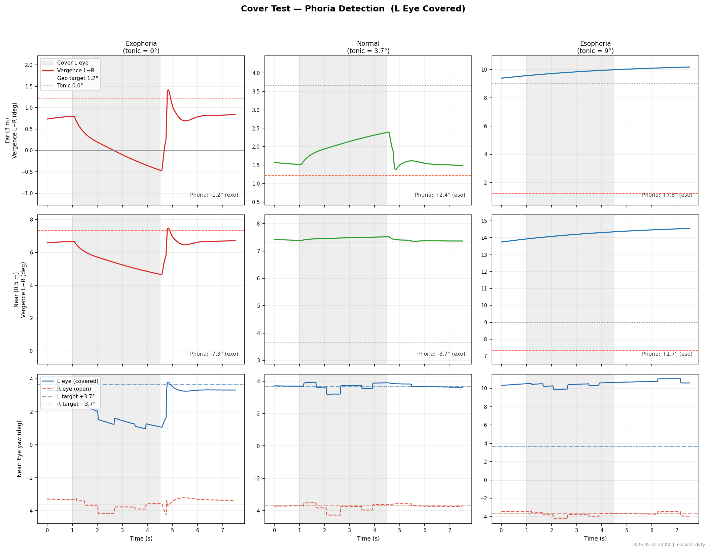
Cover Test — Phoria Detection
3 rows × 3 cols. L eye occluded during shaded period (target_present_L = 0). Cols: exophoria (tonic=0°), normal (tonic≈3.7°), esophoria (tonic=9°). Rows 0–1: vergence at far (3 m) and near (0.5 m); Row 2: per-eye yaw at near — covered L eye drifts, open R eye holds. Phoria angle = tonic_verg − geo_demand (positive=eso, negative=exo).
📖 Sheard C (1930) Am J Optom 7:564; Schor CM (1979) Vision Res 19:1359; Mitchell DE (1966) Invest Ophthalmol 5:566
behavior